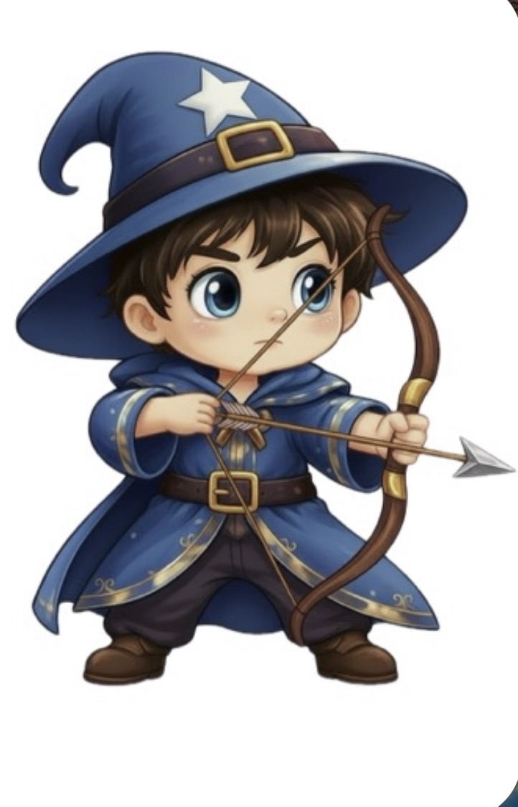

Un giovane arciere. Una scintilla. Un'isola da liberare.
THE FIRST SPARK si gioca in orizzontale.
Gira l'iPhone per continuare.

La prima isola ti aspetta: spiaggia con barca arenata, tre biomi, fiume e laghetto animati. Esplora il nuovo accampamento Goblin ordinato e raggiungi la grande arena del Boss. Tutti i modelli sono caricati prima di iniziare.
Esplora la foresta, sconfiggi cinque nemici, scegli i potenziamenti quando sali di livello e affronta il Boss Goblin.
Il gioco è in pausa finché non scegli.
Su PC puoi premere 1, 2 oppure 3